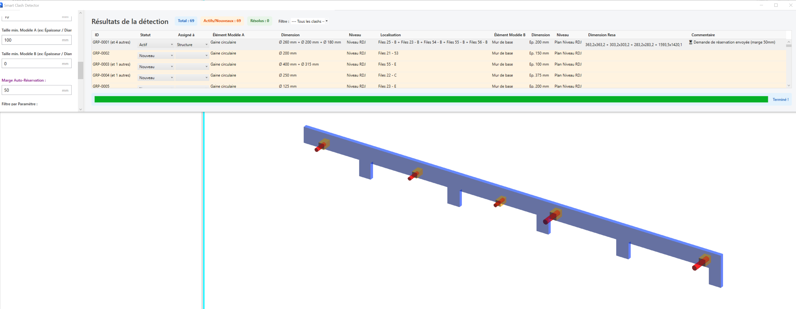

📘 SmartBimPeï - User Manual
SmartBimPeï is the premier software suite integrated into Revit®, designed to simplify the lives of BIM Managers, Coordinators, Designers, and Company Executives. This manual will guide you through using the plugin's 5 key modules.
⚙️ Module 1: Smart Clash Detector (Geometric Synthesis Engine)
Forget time-consuming clash detection processes. SmartBimPeï finds clashes, understands them, and offers concrete solutions in a single click.

1. The Configuration Panel (Left)
This panel allows you to set up your search "surgically".
- Selection Model A & Model B: Precisely choose the models and categories (e.g., MEP Ducts against Architectural Walls) to cross-check, avoiding unnecessary full-model analysis.
- Tolerance (mm): Define the acceptable penetration distance to avoid "false positives" (e.g., insulation slightly touching a wall).
- "Min. Size" Filters: Enter a minimum dimension below which the conflict is ignored. Drastically reduces calculation time!
- Auto-Opening Margin: Specifies the offset (e.g., 50mm) added around the duct when generating openings to anticipate insulation clearance.
2. The Synthesis Table (Center)
- Smart Grouping: The plugin automatically groups very close clashes under a single ID, reducing visual fatigue for the coordinator.
- "Opening Dimension" Column: Displays in real-time the final dimensions of the hole/opening to be cut. The architectural impact is immediately visible.
3. Resolution Actions (Bottom)
- 👁️ Isolate Clash: Opens a centered 3D view. The plugin automatically applies a clear graphical template: a transparent grey environment with the clashing elements opaque and highly contrasted. Instant understanding guaranteed.

- 🕳️ Generate Auto-Opening(s): In one click, the plugin places "void" families at the exact locations. The tool handles the creation of rectangular and circular voids in a fraction of a second, a task that would have taken you hours manually.

4. Exports (Communication)
- 🔄 BCF Export: Generates a
.bcfzip file incorporating perfect cameras (the famous "Magic Zoom" that prevents having your head stuck in a wall), statuses, and comments for your BIMcollab or BIM Track platforms.

- 📄 PDF & CSV Export: Perfect for quickly extracting a visual or Excel report for the coordination meeting.

📈 Module 2: BIM Health Dashboard
The ultimate tool for Management and BIM Managers.
This module acts as the control tower for your project. At a glance, you get:
- The Global Health Score out of 100 for your model.
- The total number of Unresolved Clashes.
- The number of MEP Duplicates detected.
- The global Financial Estimate of the networks (connected to the QTO module).
💡 Added Value: Ideal for evaluating the quality of a received model or for showcasing the cleanup work accomplished by the BIM team.

🧹 Module 3: Duplicate Detector (Model Cleaner)
This module launches an ultra-fast analysis to find all perfectly overlapping elements (often copied by mistake).
- Select the categories to scan (Ducts, Pipes, etc.).
- The table lists the exact duplicates.
- Click Delete Selection to purge the model.
- The goal? Prevent major financial errors during material ordering.

🕵️♂️ Module 4: BIM Data Audit & Compliance (Quality Control & CMMS)
This is your Data Police. In one click, it validates that all information required for the As-Built (Handover) and CMMS is present.
- Choose your Trade in the drop-down menu:
- Architecture (Interiors & Openings)
- Structure
- Plumbing
- HVAC
- Electrical
- Run the audit.
- The plugin will intelligently look for the required information (Fire Rating, Mark, Manufacturer, Model, Room/Space location...).
(Tip: The plugin is smart enough to look for the data in the object itself, and if it's not there, it will automatically check the Type Properties!)
- The table lists the non-compliances, with an explanatory comment on the business impact (e.g., "Without a Manufacturer, impossible to order the spare part"). Double-click to isolate the faulty object and correct its data.

💰 Module 5: Métré Express (Quantities & Pricing)
A tool designed for construction economists and estimating assistance.
- Choose a network (e.g., Circular Duct).
- The table instantly displays the real lengths, areas, and diameters extracted from the 3D model.
- Enter a Unit Price in the dedicated column.
- The total price updates live. You can then export your estimate in Excel format.

This manual is designed to support team upskilling. SmartBimPeï is not just a tool; it's a major competitive advantage for your BIM processes!